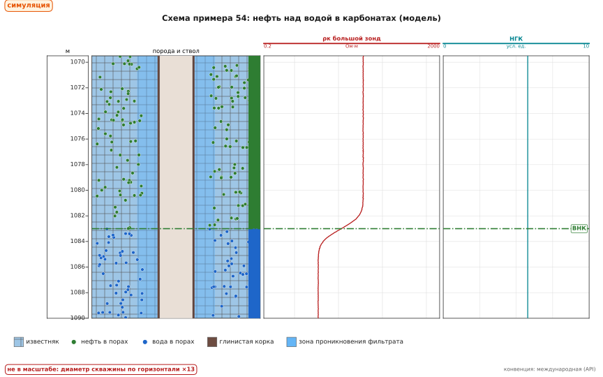

Путь › Карбонатный разрез › Шаг 33 из 34
Решение на данных: нормализация кривых
В книге: «Пример 54. Нефтеносный коллектор, ВНК и эффективная толщина по нормализации (рис. 76)» стр. 105, 107
Опирается на: шаг 32 «Наложение кривых показывает нефть» (предпосылка), шаг 32 «Наложение кривых показывает нефть» (пример), шаг 25 «Эффективная толщина у водонефтяного контакта» (предпосылка), шаг 32 «Наложение кривых показывает нефть» (переход к данным)
Суть
Пример 54 — полный цикл решения на данных: наложение кривых → продуктивный интервал → ВНК → эффективная толщина.
Расхождение нормализованных кривых показало нефть в верхней части, ВНК провели на глубине 1083м.
Из 13,5 м продуктивных отложений вычли 4,5 м плотных прослоев и получили эффективную толщину 9 м.
Пороговая идея. Полный цикл решения на данных: наложение кривых → продуктивный интервал → ВНК по критическому Pн → эффективная толщина. модель
Как это работает
Задача
Пример 54: в карбонатных отложениях выделить интервалы нефтеносного межзернового коллектора. Затем определить положение ВНК и эффективную толщину. Данные — комплекс диаграмм ГИС по скважине карбонатного разреза на рис. 76 книги. стр. 105, 107
«Выделить интервалы нефтеносного межзернового коллектора в карбонатных отложениях; определить положение ВНК»
«Комплекс диаграмм ГИС по участку скважины карбонатного разреза»
Признаки: наложение кривых
Используют способ нормализации. Сравнивают кривую сопротивления зонда БК-3 с НГМ. И кривую индукционного метода с НГМ. Все кривые приведены к единому масштабу пористости. стр. 107
«Используем способ нормализации, сравнивая кривые»
Вывод: где нефть
По расхождению кривых автор устанавливает: продуктивна верхняя часть разреза, а нижняя — водоносная. стр. 107
«Устанавливаем, что продуктивна верхняя часть разреза, а нижняя является водоносной.»

Правило: где провести ВНК
ВНК проводят на глубине 1083м. Там критический параметр насыщения Pн,кр ≈ 2,5. Это при допущении, что сопротивление по индукционному методу примерно равно сопротивлению пласта. стр. 107
«Границу ВНК проводим на глубине 1083м»
Эффективная толщина
Общая толщина продуктивных отложений — 13,5 м. Из неё исключают прослои плотных пород-неколлекторов в интервале 1069,5 - 1083м. стр. 107
«Общая толщина продуктивных отложений составляет 13,5 м.»
Прослои неколлектора выделяют по диаграмме микрозондов. А в отдельных случаях — по сближению нормализованных кривых НГМ и БК-3: где кривые сходятся, продуктивного коллектора нет. стр. 107
«прослои плотных пород неколлекторов, выделяемых по диаграмме микрозондов, а в отдельных случаях сближением нормализованных кривых НГМ и БК-3»
Суммарная толщина прослоев — 4,5 м. Исключив их, автор получает эффективную толщину 9 м. стр. 107
«находим, что»
По шагам
Цикл решения примера 54
- Приведите кривые БК-3, индукционного метода и НГМ к единому масштабу пористости. стр. 107
- Найдите интервалы расхождения кривых: это продуктивный коллектор. стр. 107
- Проведите ВНК на глубине, где Pн равен критическому. стр. 107
- Определите общую толщину продуктивных отложений. стр. 107
- Выделите плотные прослои по микрозондам и по сближению нормализованных кривых. стр. 107
- Вычтите их суммарную толщину из общей. стр. 107
Разбор примеров из книги
Пример 54. Нормализация в карбонатном разрезе стр. 107
Условие. Карбонатные отложения, комплекс диаграмм рис. 76. Выделить интервалы нефтеносного межзернового коллектора, определить ВНК и эффективную толщину продуктивных коллекторов.
- Сравнить кривые сопротивления БК-3 и НГМ, а также индукционного метода и НГМ, приведённые к единому масштабу пористости.
- По расхождению кривых установить, что продуктивна верхняя часть разреза, а нижняя водоносная.
- Провести ВНК на глубине 1083м, где Pн,кр ≈ 2,5 (принимая сопротивление по индукционному методу примерно равным сопротивлению пласта).
Итог. Продуктивна верхняя часть, ВНК на глубине 1083м; расчёт эффективной толщины продолжается в следующей части текста.
Пример 54 (окончание). Эффективная толщина стр. 107
Условие. Общая толщина продуктивных отложений 13,5 м; в интервале 1069,5 - 1083м есть прослои плотных пород-неколлекторов.
- Выделить прослои неколлектора по диаграмме микрозондов и по сближению нормализованных кривых НГМ и БК-3.
- Суммарная толщина прослоев неколлектора — 4,5 м.
- Вычесть её из общей толщины: 13,5 - 4,5.
Итог. Эффективная толщина 9 м.
Решение на данных
Читаем нормализованные кривые, как в примере 54
- Расхождение или совпадение кривых БК-3 (индукционного метода) и НГМ в едином масштабе пористости
- Критический параметр насыщения Pн,кр
Расхождение — продуктивный коллектор; совпадение — водоносный коллектор или неколлектор; ВНК — где Pн равен критическому. стр. 107
Продуктивный интервал, глубина ВНК и эффективная толщина.
Потренируйтесь
Дано: В верхней части разреза нормализованные кривые расходятся (Пример 54, стр. 107)
Расхождение кривых в примере 54 указало на продуктивную верхнюю часть.
Дано: Внутри продуктивного интервала кривые НГМ и БК-3 сблизились, микрозонды показывают плотный прослой (Пример 54, стр. 107)
Сближение нормализованных кривых — признак прослоя неколлектора.
Дано: Общая толщина продуктивных отложений 13,5 м, прослоев неколлектора 4,5 м (Пример 54, стр. 107)
13,5 - 4,5 = 9 м, как у автора.
Цифры и условия
- ВНК — на глубине 1083м, где Pн,кр ≈ 2,5. стр. 107
- Общая толщина продуктивных отложений — 13,5 м. стр. 107
- Прослои неколлектора — 4,5 м, эффективная толщина — 9 м. стр. 107
- Допущение: сопротивление по индукционному методу примерно равно сопротивлению пласта. стр. 107
Что это значит для данных модель
Это «решение на данных»: признаки (расхождение кривых) → правило (критический Pн) → вывод (ВНК и продуктивный интервал).
- Вход
- кривые БК-3, индукционного метода, НГМ; критический Pн
- Выход
- продуктивный интервал, глубина ВНК
- Где ломается
- Допущение, что сопротивление индукционного метода близко к сопротивлению пласта; при глубоком проникновении оно нарушается.
- гипотеза Пример можно воспроизвести на открытых каротажных данных (например, Volve) как интерактив «наложи кривые и найди ВНК».
Где здесь ручной труд специалиста
- Входные данные
- диаграммы рис. 76, критерии объекта
- Ручные шаги
- совмещение кривых, отбивка ВНК и кровли
- Точки суждения
- где проходит ВНК в переходной части
- Время
- быстро при готовых критериях
- Типичные ошибки
- принять сопротивление неглубинного метода за сопротивление пласта
Аналогия модель
Пайплайн: нормализация признаков → детектор аномалий → порог → разметка интервалов.
Где аналогия перестаёт работать: Каждый шаг опирается на допущения о пласте, которые надо проверять, а не только на статистику.
Рисунки книги к этому шагу
- Рис. 76. Рис.76. Комплекс диаграмм ГИС по участку скважины карбонатного разреза: стр. 105
Рисунки книги в курс не вставляются: смотрите их в книге по номеру страницы; нужные для примеров перерисованы кодом.
Проверь себя
м
Верный ответ: 9 м
Эффективная толщина — общая толщина минус прослои неколлектора: 13,5 - 4,5 = 9 м. Где это в тексте (стр. 107) →
Верный ответ: 1083м
ВНК проведён на глубине 1083м, где Pн,кр ≈ 2,5. Где это в тексте (стр. 107) →
Источник
Все утверждения шага с дословной цитатой автора и страницей книги (по PDF).
Пример 54: выделить нефтеносный коллектор в карбонатах, определить ВНК и эффективную толщину по рис. 76. наблюдение
«Выделить интервалы нефтеносного межзернового коллектора в карбонатных отложениях; определить положение ВНК»
Используют нормализацию: БК-3 и НГМ, индукционный метод и НГМ в едином масштабе пористости. наблюдение
«Используем способ нормализации, сравнивая кривые»
Продуктивна верхняя часть разреза, нижняя — водоносная. вывод
«Устанавливаем, что продуктивна верхняя часть разреза, а нижняя является водоносной.»
ВНК проведён на глубине 1083м, где критический Pн около 2,5. вывод
«Границу ВНК проводим на глубине 1083м»
Рис. 76 — комплекс диаграмм ГИС по скважине карбонатного разреза. наблюдение
«Комплекс диаграмм ГИС по участку скважины карбонатного разреза»
Общая толщина продуктивных отложений — 13,5 м. наблюдение
«Общая толщина продуктивных отложений составляет 13,5 м.»
Прослои плотных неколлекторов выделяют по микрозондам, а иногда по сближению нормализованных кривых НГМ и БК-3. наблюдение
«прослои плотных пород неколлекторов, выделяемых по диаграмме микрозондов, а в отдельных случаях сближением нормализованных кривых НГМ и БК-3»
Исключив прослои неколлектора, получают эффективную толщину 9 м. вывод
«находим, что»
На этот шаг опираются: шаг 34 «Свой порог пористости для карбонатов».